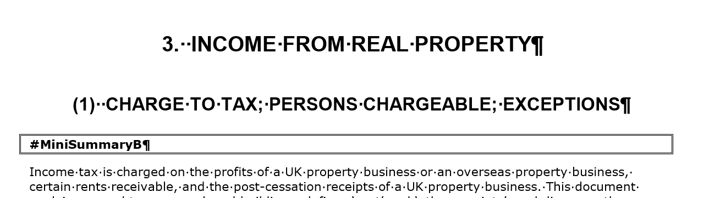
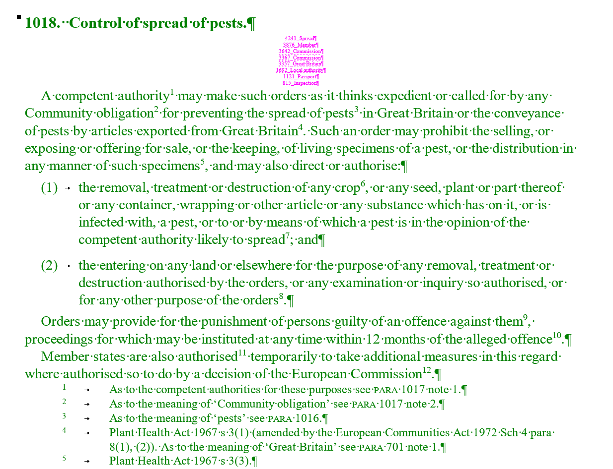
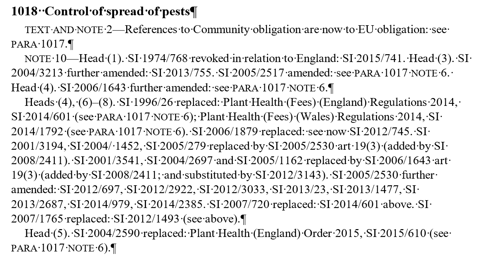
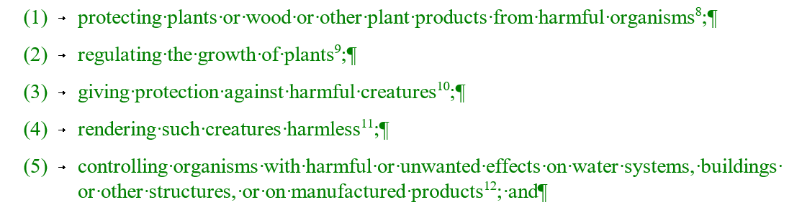
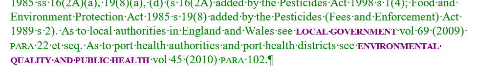
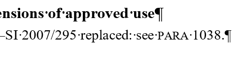

Up and Sideways
Migrating legal documents from RTF to XML
Balisage 2017
Ari Nordström | ari.nordstrom@gmail.com
|  |
|
|  |
Volume paragraphs |
|  |
Supplement paragraphs |
|  |
|
Lists, footnotes, tables, paragraphs... |
|  |
|
Emphasis, superscript, citations, cross-references... |
Pipelines
RTF → DOCX → XHTML → XML
- Aspose: RTF to docx
- XSLT: docx to
flat
XHTML
<p data-lexisnexis-word-style="vol-Para">Council tax benefit
has been abolished and replaced by council
tax reduction schemes<sup>9</sup>.</p>
Pipeline with one XSLT per step
Nig Gibson's XProc Tools and Mapping Tools
We need to read the .Docx or WordML file and and transform the flat, formatting-rich XML in a well structured XML document. One approach to this problem is to create a pipeline that uses a progressive refinement technique to achieve a simple sequence of transformations from one format to another
Nig Gibson's XProc Tools and Mapping Tools
(see https://github.com/Corbas/xproc-tools and https://github.com/Corbas/mapping-tools)
Publishing with XProc, XML London 2015: http://xmllondon.com/2015/xmllondon-2015-proceedings.pdf#page=81
<manifest
xmlns="http://www.corbas.co.uk/ns/transforms/data"
xml:id="migration.p1.p2"
description="migration.p1.p2"
xml:base="."
version="1.0">
<group
xml:id="p12p2.conversion"
description="p12p2.conversion"
xml:base="."
enabled="true">
<item
href="p2_structure.xsl"
description="Do some basic structural stuff"/>
<item
href="p2_orphan-supps.xsl"
description="Handle orphaned supps"/>
<item
href="p2_trintro.xsl"
description="Handle tr:intros"/>
<item
href="p2_volbreaks.xsl"
description="Generate HALS volume break PIs"/>
<item
href="p2_para-grp.xsl"
description="Produce vol paras and supp paras"/>
<item
href="p2_blockpara.xsl"
description="Add display attrs to supp blockparasw.
Add print-only supp blockparas."/>
<item
href="p2_ftnotes.xsl"
description="Move footnotes inline"/>
<item
href="p2_orphan-ftnotes.xsl"
description="Convert orphaned footnotes in supps to
paras starting with the footnote label"/>
<item
href="p2_removecaseinfo.xsl"
description="Remove metadata in case refs"/>
<item
href="p2_xpp-pi.xsl"
description="Generate XPP PIs"/>
<item
href="p2_xref-cleanup.xsl"
description="Removes leading and trailing whitespace from xrefs"/>
<item
href="p2_cleanup.xsl"
description="Clean up the XML, including namespaces"/>
</group>
</manifest>
One step = One XSLT
<xsl:template match="/">
<xsl:apply-templates select="node()" mode="MY_SUBSET"/>
</xsl:template>
<xsl:template
match="node()"
mode="#all">
<xsl:copy copy-namespaces="no">
<xsl:copy-of select="@*"/>
<xsl:apply-templates
select="node()"
mode="#current"/>
</xsl:copy>
</xsl:template>
<xsl:template
match="para"
mode="MY_SUBSET">
<xsl:copy copy-namespaces="no">
<xsl:copy-of select="@*"/>
<xsl:attribute name="needs-review">
<xsl:value-of
select="if (parent::*[@pub='supp'])
then ('yes')
else ('no')"/>
</xsl:attribute>
<xsl:apply-templates
select="node()"
mode="MY_SUBSET"/>
</xsl:copy>
</xsl:template>
-rw-r--r-- 1 arino 6.6M Apr 3 12:05 1-p2_structure.xsl.xml
-rw-r--r-- 1 arino 9.2M Apr 3 12:05 2-p2_orphan-supps.xsl.xml
-rw-r--r-- 1 arino 8.8M Apr 3 12:05 3-p2_trintro.xsl.xml
-rw-r--r-- 1 arino 8.8M Apr 3 12:05 4-p2_volbreaks.xsl.xml
-rw-r--r-- 1 arino 8.0M Apr 3 12:05 5-p2_para-grp.xsl.xml
-rw-r--r-- 1 arino 8.0M Apr 3 12:05 6-p2_blockpara.xsl.xml
-rw-r--r-- 1 arino 7.3M Apr 3 12:05 7-p2_ftnotes.xsl.xml
-rw-r--r-- 1 arino 7.3M Apr 3 12:05 8-p2_orphan-ftnotes.xsl.xml
-rw-r--r-- 1 arino 7.3M Apr 3 12:05 9-p2_removecaseinfo.xsl.xml
-rw-r--r-- 1 arino 7.3M Apr 3 12:05 10-p2_xpp-pi.xsl.xml
-rw-r--r-- 1 arino 7.3M Apr 3 12:05 11-p2_xref-cleanup.xsl.xml
-rw-r--r-- 1 arino 6.3M Apr 3 12:05 12-p2_cleanup.xsl.xml
Ant macros for XProc, batch conversions, validate, schematron, ...
Some examples
<p data-lexisnexis-word-style="vol-H3">
<span class="bold">(ii) Classification of Prison Establishments for Adults</span>
</p>
<p data-lexisnexis-word-style="MiniSummaryB">
<span class="bold">#MiniSummaryB</span>
</p>
<p data-lexisnexis-word-style="n-MiniSummary">Although
there is no statutory requirement for the classification of prisons, every adult prison for
male prisoners is classified so that it falls into one of four categories: local prisons;
closed training prisons; the High Security Estate; and open prisons. This document describes
these four categories of prison establishments for male prisoners, as well as woman's
prisons and democratic therapeutic communities.</p>
<p data-lexisnexis-word-style="MiniSummaryE">
<span class="bold">#MiniSummaryE</span>
</p>
<p data-lexisnexis-word-style="vol-PH">
<span class="bold">482. Classification of prisons.</span>
</p>
<p data-lexisnexis-word-style="vol-Para">Although
there is no statutory requirement for the classification of prisons<sup>1</sup>, every adult
prison for male prisoners is classified so that it falls into one of four categories: local
prisons; closed training prisons; the High Security Estate; and open prisons.</p>
<xsl:variable
name="max-title-level"
select="max(//@map:level)"/>
<xsl:template match="body">
<xsl:copy>
<xsl:apply-templates select="@*"/>
<xsl:call-template name="process-titles"/>
</xsl:copy>
</xsl:template>
<xsl:template name="process-titles" as="node()*">
<xsl:param name="level" select="$max-title-level"/>
<xsl:param name="content" select="node()" as="node()*"/>
<xsl:variable name="result" as="node()*">
<xsl:for-each-group
select="$content"
group-starting-with="*[not(self::section)][@map:level]">
<xsl:choose>
<!-- if we have a current level title based group, wrap it -->
<xsl:when
test="self::*[not(self::section)][@map:level] and @map:level = $level">
<section>
<xsl:apply-templates select="@* except @xml:id"/>
<xsl:copy-of select="current-group()"/>
</section>
</xsl:when>
<xsl:otherwise>
<xsl:copy-of select="current-group()"/>
</xsl:otherwise>
</xsl:choose>
</xsl:for-each-group>
</xsl:variable>
<xsl:choose>
<xsl:when test="$level gt 1">
<xsl:call-template name="process-titles">
<xsl:with-param name="level" select="$level - 1"/>
<xsl:with-param name="content" select="$result"/>
</xsl:call-template>
</xsl:when>
<xsl:otherwise>
<xsl:sequence select="$result"/>
</xsl:otherwise>
</xsl:choose>
</xsl:template>
<xsl:variable
name="section-start"
select="preceding-sibling::p[ends-with(., 'B')][matches(normalize-space(.), concat('^[\[#]?', @data-lexisnexis-word-style, '$'),'i')][1]"/>
<xsl:variable name="end-class"
select="replace($section-start/@data-lexisnexis-word-style, 'B$', 'E')"/>
<!-- find the first appropriate section end after the current node -->
<xsl:variable name="section-end"
select="$section-start/following-sibling::p[lower-case(@data-lexisnexis-word-style)=lower-case($end-class)][1][. >> current()]"/>
<xsl:when test="$section-start and $section-end">
<xsl:copy copy-namespaces="no">
<xsl:attribute name="cword:section" select="generate-id($section-start)"/>
<xsl:attribute name="cword:section-class" select="$section-start/@data-lexisnexis-word-style"/>
<xsl:copy-of select="@*|node()"/>
</xsl:copy>
</xsl:when>
for-each-group
Lists, footnotes, heading numbering
<xsl:for-each-group
select="*"
group-adjacent="boolean(self::core:listitem[core:*/@data-lexisnexis-word-style=('L1','L2','L3',
'vol-L1', 'vol-L1CL', 'vol-L1P', 'vol-Quote', 'vol-L2','vol-L3',
'sup-L1', 'sup-L1CL', 'sup-L2', 'sup-L3', 'term-ref',
'vol-QuoteL1', 'vol-FL1', 'vol-FL2')])">
<xsl:choose>
<xsl:when test="current-grouping-key()">
<xsl:element name="core:list">
<xsl:call-template name="restart-attr"/>
<xsl:attribute name="type" select="@type"/>
<xsl:for-each-group
select="current-group()"
group-adjacent="boolean(self::core:listitem[core:*/@data-lexisnexis-word-style=('L2','L3',
'vol-L1P', 'vol-Quote','vol-L2','vol-L3',
'sup-L2', 'sup-L3','term-ref', 'vol-FL2')])">
<xsl:choose>
<xsl:when test="current-grouping-key()">
<xsl:element name="core:list">
<xsl:attribute
name="type"
select="@type"/>
<xsl:apply-templates
select="current-group()" mode="KEPLER_LISTS"/>
</xsl:element>
</xsl:when>
<xsl:otherwise>
<xsl:apply-templates
select="current-group()"
mode="KEPLER_LISTS"/>
</xsl:otherwise>
</xsl:choose>
</xsl:for-each-group>
</xsl:element>
</xsl:when>
<xsl:otherwise>
<xsl:apply-templates
select="current-group()"
mode="KEPLER_LISTS"/>
</xsl:otherwise>
</xsl:choose>
</xsl:for-each-group>
following-sibling processing
Cross-references
Transformed to something like this:
<lnci:cite type="paragraph-ref">
<lnci:book>
<lnci:bookref>
<lnci:paragraph num="426"/>
</lnci:bookref>
</lnci:book>
<lnci:content>426</lnci:content>
</lnci:cite>
See <lnci:publicationname value="bankruptcy and individual insolvency"><core:emph typestyle="smcaps">bankruptcy and individual insolvency</core:emph></lnci:publicationname> vol 5 (2013) <span class="smallcaps">para</span> 853.
<span class="smallcaps">para 853</span>
<core:para data-lexisnexis-word-style="vol-FP">See <span class="smallcaps">paras</span> 122, 145, 167, 853–854, 858–859.</core:para>
<core:emph typestyle="smcaps">
<xsl:analyze-string select="." regex="^[\s]*(para[s]?)([\s]*)">
<xsl:matching-substring>
<xsl:value-of select="regex-group(1)"/>
</xsl:matching-substring>
</xsl:analyze-string>
</core:emph>
<xsl:choose>
<!-- Single ref inside -->
<xsl:when test="matches(.,'^para[s]?[\s]+([0-9]+[A-Z]*(\.[0-9]+)?)[\.]?$')">
...
</xsl:when>
<!-- Combined range and list inside -->
<xsl:when test="matches(.,'^para[s]?[\s]*[0-9]+[A-Z]*(\.[0-9]+)?([–][0-9]+[A-Z]*(\.[0-9]+)?)?(,\s+[0-9]+[A-Z]*([–][0-9]+[A-Z]*(\.[0-9]+)?)?)*$')">
...
</xsl:when>
<!-- Single ref in following sibling -->
<xsl:when test="matches(following-sibling::text()[1],'^[\s]*([0-9]+[A-Z]*(\.[0-9]+)?)[^0-9A-Z–,]')">
...
</xsl:when>
<!-- Combined range and list follows outside -->
<xsl:when test="matches(following-sibling::text()[1],'^[\s]*[0-9]+[A-Z]*(\.[0-9]+)?([–][0-9]+[A-Z]*(\.[0-9]+)?)?(,\s+[0-9]+[A-Z]*(\.[0-9]+)?([–][0-9]+[A-Z]*(\.[0-9]+)?)?)*')">
...
</xsl:when>
</xsl:choose>
LOTS and LOTS of regular expressions
Processing xrefs...
<xsl:when test="matches(following-sibling::text()[1],'^[\s]*[0-9]+[A-Z]*(\.[0-9]+)?([–][0-9]+[A-Z]*(\.[0-9]+)?)?(,\s+[0-9]+[A-Z]*(\.[0-9]+)?([–][0-9]+[A-Z]*(\.[0-9]+)?)?)*')">
...
</xsl:when>
<xsl:analyze-string
select="following-sibling::text()[1]"
regex="^[\s]*([0-9]+[A-Z]*(\.[0-9]+)?([–][0-9]+[A-Z]*(\.[0-9]+)?)?(,\s+[0-9]+[A-Z]*(\.[0-9]+)?([–][0-9]+[A-Z]*(\.[0-9]+)?)?)*)(.+)$">
<xsl:matching-substring>
<xsl:text> </xsl:text>
<xsl:for-each select="tokenize(regex-group(1),',')">
<lnci:paragraph>
<xsl:attribute
name="num"
select="if (matches(.,'–'))
then (normalize-space(substring-before(.,'–')))
else normalize-space(.)"/>
<xsl:if test="matches(.,'–')">
<xsl:attribute
name="lastnum">
<xsl:value-of
select="normalize-space(substring-after(.,'–'))"/>
</xsl:attribute>
</xsl:if>
<xsl:value-of
select="normalize-space(.)"/>
</lnci:paragraph>
<xsl:if test="position()!=last()">
<xsl:text>, </xsl:text>
</xsl:if>
</xsl:for-each>
<xsl:value-of select="regex-group(5)"/>
</xsl:matching-substring>
</xsl:analyze-string>
External Cross-references
<lnci:cite type="paragraph-ref">
<lnci:book>
<lnci:bookref>
<lnci:publicationname
value="sentencing"/>
<lnci:paragraph
num="1"/>
</lnci:bookref>
</lnci:book>
<lnci:content>
<core:emph typestyle="smcaps">sentencing</core:emph> vol 92 (2015) <core:emph
typestyle="smcaps">para</core:emph> 1</lnci:content>
</lnci:cite>
Remember lists?
<p data-lexisnexis-word-style="vol-L1">(1)<span class="tab"/>protecting plants or wood or other
plant products from harmful organisms<sup>8</sup>;</p>
<p data-lexisnexis-word-style="vol-L1">(2)<span class="tab"/>regulating the growth of
plants<sup>9</sup>;</p>
<p data-lexisnexis-word-style="vol-L1">(3)<span class="tab"/>giving protection against harmful
creatures<sup>10</sup>;</p>
<p data-lexisnexis-word-style="vol-L1">(4)<span class="tab"/>rendering such creatures
harmless<sup>11</sup>;</p>
<p data-lexisnexis-word-style="vol-L1">(5)<span class="tab"/>controlling organisms with harmful
or unwanted effects on water systems, buildings or other structures, or on manufactured
products<sup>12</sup>; and</p>
<xsl:when
test="@data-lexisnexis-word-style=('L1', 'vol-L1', 'vol-L1CL', 'vol-L1P', 'sup-L1', 'sup-L1CL')">
<xsl:element
name="core:listitem">
<xsl:attribute
name="type">
<xsl:choose>
<xsl:when
test="span[1][@class='smallcaps' and
matches(.,'\(?[a-z]+\)?')]">
...
</xsl:when>
<xsl:otherwise>
...
</xsl:otherwise>
</xsl:choose>
</xsl:attribute>
<xsl:element
name="core:para">
<xsl:copy-of
select="@*"/>
<xsl:apply-templates
select="node()[not(following-sibling::span[@class='tab'])]"
mode="KEPLER_STRUCTURE"/>
</xsl:element>
</xsl:element>
</xsl:when>
<xsl:analyze-string
select="if (node()[1][self::span and .!=''])
then (span[1]/text()[1])
else (text()[1])"
regex="^(\(([0-9]+)\)[\s]?)|
(\(([ivx]+)\)?[\s]?)|
(\(([A-Z]+)\))|
(\(([a-z]+)\))$">
<xsl:matching-substring>
<xsl:choose>
<xsl:when
test="regex-group(1)!=''">number</xsl:when>
<xsl:when
test="regex-group(3)!=''">lower-roman</xsl:when>
<xsl:when
test="regex-group(5)!=''">upper-alpha</xsl:when>
<xsl:when
test="regex-group(7)!=''">lower-alpha</xsl:when>
</xsl:choose>
</xsl:matching-substring>
<xsl:non-matching-substring>
<xsl:value-of
select="'plain'"/>
</xsl:non-matching-substring>
</xsl:analyze-string>
Stitching files together
777K Jan 27 08:50 58A_IncomeTaxation_07(1294-1342).rtf
750K Jan 27 08:51 58A_IncomeTaxation_08(1343-1396).rtf
924K Jan 27 08:51 58A_IncomeTaxation_09(1397-1453).rtf
1.1M Jan 27 08:51 58A_IncomeTaxation_10(1454-1522).rtf
953K Jan 27 08:51 58A_IncomeTaxation_11(1523-1592).rtf
803K Jan 27 08:51 58A_IncomeTaxation_12(1593-1632).rtf
554K Jan 27 08:51 58A_IncomeTaxation_13(1633-1670).rtf
587K Jan 27 08:51 58A_IncomeTaxation_14(1671-1703).rtf
793K Jan 27 08:51 58A_IncomeTaxation_15(1704-1760).rtf
959K Jan 27 08:55 59_IncomeTaxation_01(1761-1809).rtf
1020K Jan 27 08:55 59_IncomeTaxation_02(1810-1866).rtf
1.1M Jan 27 08:55 59_IncomeTaxation_03(1867-1924).rtf
1.1M Jan 27 08:55 59_IncomeTaxation_04(1925-1975).rtf
1.3M Jan 27 08:55 59_IncomeTaxation_05(1976-2025).rtf
1.2M Jan 27 08:55 59_IncomeTaxation_06(2026-2074).rtf
989K Jan 27 08:55 59_IncomeTaxation_07(2075-2128).rtf
1.9M Jan 27 08:56 59_IncomeTaxation_08(2129-2174).rtf
1.1M Jan 27 08:56 59_IncomeTaxation_09(2175-2214).rtf
1.3M Jan 27 08:56 59_IncomeTaxation_10(2215-2276).rtf
1.6M Jan 27 08:56 59_IncomeTaxation_11(2277-2332).rtf
09_Children_12(635-704).xml
<xsl:param
name="base-pattern"
select="'[()a-zA-Z0-9_\s%]+'"/>
<xsl:param
name="numparas-pattern"
select="'_[0-9]{2}\([0-9]+[A-Z]*[\-][0-9]+[A-Z]*\)'"/>
<xsl:param
name="suffix-pattern"
select="'\.xml'"/>
<xsl:param
name="pattern">
select="concat('(',$base-pattern,')(',$numparas-pattern,')',$suffix-pattern)"/>
Equations
<o:OLEObject
xmlns:o="urn:schemas-microsoft-com:office:office"
Type="Embed"
ProgID="Equation.3"
ShapeID="_x0000_i1025"
DrawAspect="Content"
ObjectID="_1"/>
<?eqn file="HALS_Income.xml" eqn-no="24"?>
- RTF to LaTeX (run
rtf2latex2ein Ant) - LaTeX to XHTML+MathML (run
TtMin Ant) - Normalise resulting XHTML (use file stitcher)
- Count and reinsert equations (add XSLT step to conversion manifest)
So, the final pipeline...
<?xml version="1.0" encoding="UTF-8"?>
<manifest>
<group>
<item href="word-to-xhtml5-elements.xsl"/>
<item href="add-eqn-pi.xsl"/>
<item href="remove-blockparas.xsl"/>
<item href="wrap-blocks.xsl"/>
<item href="merge_sups.xsl"/>
<item href="merge_spans.xsl"/>
<processed-item
stylesheet="build-mapping-stylesheet.xsl">
<item
xml:base="../../mapping/"
href="stair-halsbury.xml"/>
</processed-item>
<item href="rewrite-para-numbers.xsl"/>
<item href="group-paras.xsl"/>
<item href="insert-sections-hals-stair.xsl"/>
</group>
<group>
<item href="map-word-symbols.xsl"/>
<item href="add-hyperlinks.xsl"/>
<item href="cleanup.xsl"/>
</group>
<!-- Preprocess for Kepler (HTML to HTML) -->
<group>
<item href="add-missing-sections.xsl"/>
<item href="add-intros.xsl"/>
<item href="add-supp-chapter.xsl"/>
</group>
<!-- Basic construction of Kepler block structures and inline markup -->
<group>
<item href="html2kepler_structure.xsl"/>
<item href="html2kepler_minisummary.xsl"/>
<item href="html2kepler_wrapintros.xsl"/>
<item href="html2kepler_hardcopyonly.xsl"/>
<item href="html2kepler_inline.xsl"/>
</group>
<!-- Xref and cite processing -->
<group>
<item href="html2kepler_refspanmerge.xsl"/>
<item href="html2kepler_casenames-spans.xsl"/>
<item href="html2kepler_cites.xsl"/>
<item href="html2kepler_inline-ref.xsl"/>
<item href="html2kepler_construct-refs.xsl"/>
<item href="html2kepler_xrefs.xsl"/>
</group>
<!-- Other Kepler fixes -->
<group>
<item href="html2kepler_grouping.xsl"/>
<item href="html2kepler_lists.xsl"/>
<item href="html2kepler_quoted-lists.xsl"/>
<item href="html2kepler_tables.xsl"/>
<item href="html2kepler_appendices.xsl"/>
<item href="html2kepler_desig.xsl"/>
<item href="html2kepler_toc.xsl"/>
<item href="html2kepler_footnotes.xsl"/>
<item href="html2kepler_metadata.xsl"/>
<item href="html2kepler_listcleanup.xsl"/>
<item href="html2kepler_listnumcleanup.xsl"/>
<item href="html2kepler_cleanup.xsl"/>
<item href="html2kepler_namespacecleanup.xsl"/>
</group>
</manifest>
...something to simplify the XHTML+MathML with...
<manifest>
<group>
<item href="mml_simplify.xsl"/>
</group>
</manifest>
...and another couple of steps to refine.
<manifest>
<group>
<item href="p2_structure.xsl"/>
<item href="p2_orphan-supps.xsl"/>
<item href="p2_trintro.xsl"/>
<item href="p2_volbreaks.xsl"/>
<item href="p2_para-grp.xsl"/>
<item href="p2_blockpara.xsl"/>
<item href="p2_add-display-attrs-blockpara.xsl"/>
<item href="p2_ftnotes.xsl"/>
<item href="p2_orphan-ftnotes.xsl"/>
<item href="p2_removecaseinfo.xsl"/>
<item href="p2_xpp-pi.xsl"/>
<item href="p2_xref-cleanup.xsl"/>
<item href="p2_heading-caps.xsl"/>
<item href="mml_remove-para.xsl"/>
<item href="mml_insert.xsl"/>
</group>
</manifest>
Oh, and a namespace cleanup and "add DOCTYPE" step in the Ant script
QA
- XSpec (writing XSLT)
- Compare input with output, 39 XSLTs later...
- Compare batches of input/output files
- XSpec (testing pipeline intermediate steps)
<?xml version="1.0" encoding="UTF-8"?>
<tests
xmlns="http://www.sgmlguru.org/ns/xproc/steps"
manifest="xslt/manifest-stair-p1-to-p2.xml"
xml:base="file:/c:/Users/nordstax/repos/ca-hsd/stair">
<!-- Use paths relative to /tests/@xml:base for pipeline manifest, XSLT and XSpec -->
<test
xslt="xslt/p2_structure.xsl"
xspec="xspec/p2_structure.xspec"
focus="batch"/>
<test
xslt="xslt/p2_para-grp.xsl"
xspec="xspec/p2_para-grp.xspec"
focus="batch"/>
<test
xslt="xslt/p2_ftnotes.xsl"
xspec="xspec/p2_ftnotes.xspec"
focus="batch"/>
</tests>
- Generated reports
- Schematron
- DTD validation (obviously)
But also...
Editor reviews
Technical reviews
What I've Learned
Keep it simple!
Micropipelining won't work here
Don't use contains() or starts-with()
Or nested replace(), or...
matches() and a proper regex is ALWAYS better
Thank you